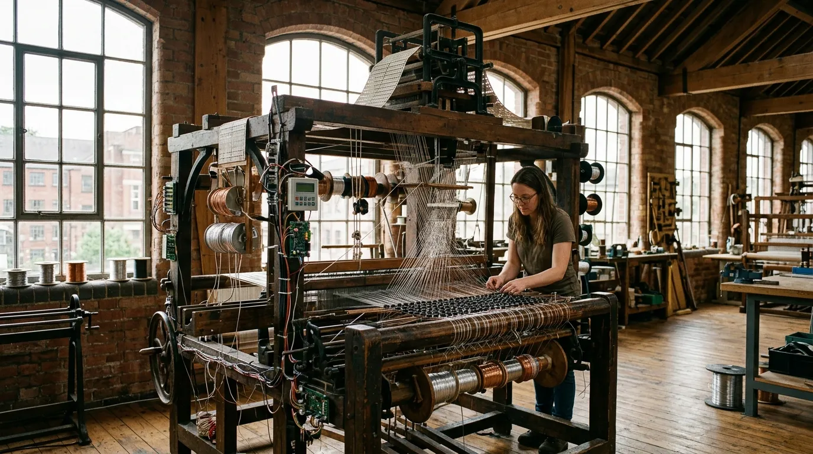
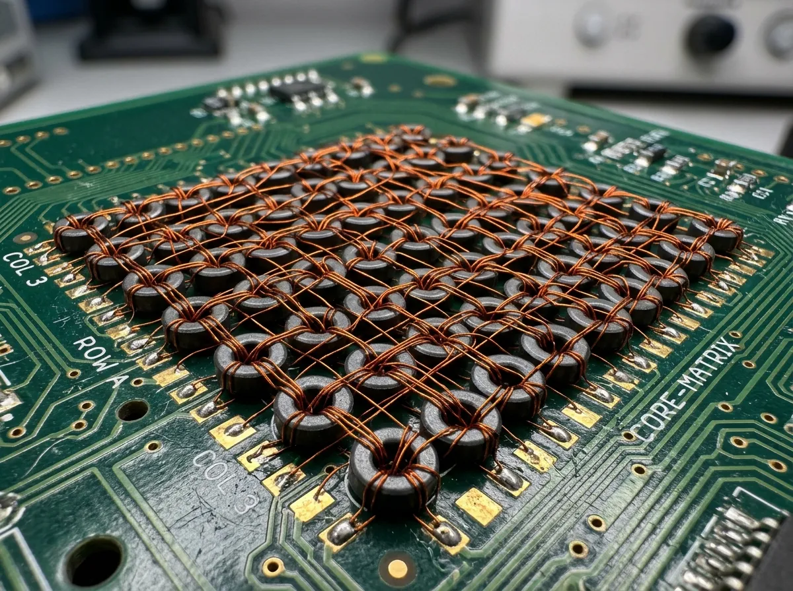
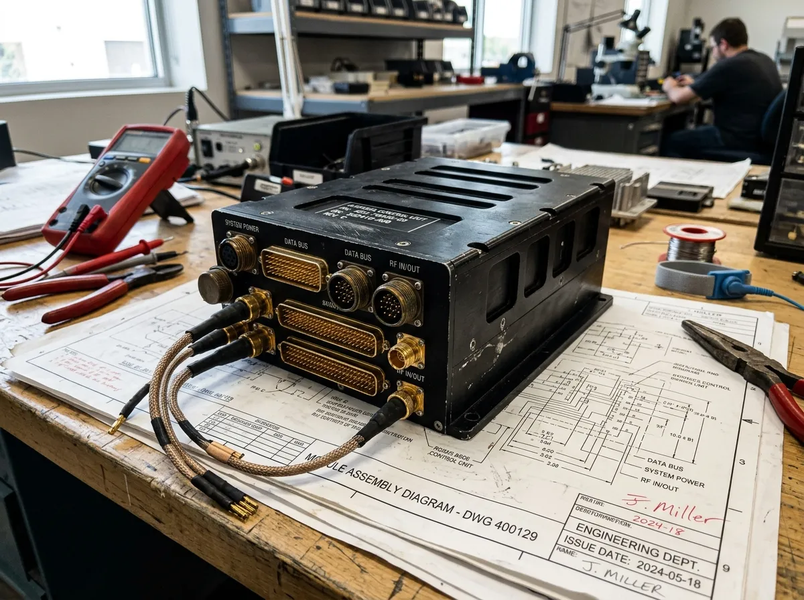
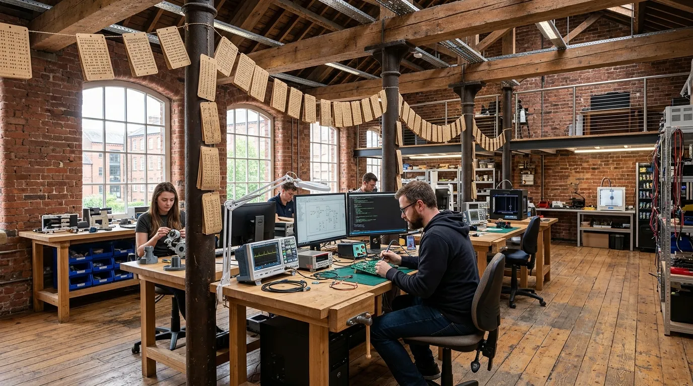

PERMANENT COMPUTING WOVEN FROM COPPER AND FERRITE.
We hand-weave unhackable magnetic core-rope memory for systems that cannot afford a firmware update.
MagnaLoom manufactures hand-threaded magnetic core memory in a Nottingham lace mill for aerospace, nuclear, and sub-sea control systems. While modern silicon flash memory slowly leaks electrons and panics during solar storms, our woven copper matrices preserve critical machine code for centuries without power. To rewrite our firmware, an adversary requires a pair of wire cutters and physical access to your chassis.

01 // THE WOVEN SILICON ANTIDOTE
The computing industry spent fifty years convincing itself that microscopic floating gates holding fleeting pockets of electrons represented progress. The result is a fragile digital ecosystem where enterprise servers suffer silent bit-rot, cosmic rays flip mission-critical variables, and remote adversaries rewrite operating firmware while engineers sleep. Silicon is fast, cheap, and perpetually anxious.
At our Nottingham workshop, we construct memory using the same physics that guided Apollo to the moon, updated with modern laser-aligned optics and Teflon-insulated silver wire. Each binary bit is physically determined by whether a conductive wire passes through or bypasses a 0.8-millimetre sintered ferrite ring. If the wire threads the core, it is a permanent one; if it skips the core, it is an immutable zero.
You cannot deploy a remote zero-day exploit against a woven textile. You cannot corrupt its boot sector with electromagnetic pulses, and you cannot degrade its storage state by leaving it unpowered in an Arctic bunker for ninety years. It is memory made physical, permanent, and entirely indifferent to the chaos of the modern internet.
The Core-Rope Architecture
A detailed mechanical breakdown of how sense wires and inhibit lines physically route through 0.8 mm ferrite toroids to store machine microcode without volatile power. By enforcing binary logic at a macroscopic, tangible scale, we bypass the inherent instability of quantum-level charge storage. Each zero or one is irrevocably anchored in solid geometry, meaning your critical execution instructions are baked into the physical hardware itself—impervious to network penetration, local tampering, or logic circuit decay.

Neutron & EMP Immunity
Certified resilience against nuclear electromagnetic pulse (MIL-STD-461G) and cosmic ray flux. Unlike volatile RAM or floating-gate flash cells, MagnaLoom modules experience zero single-event latchups during severe solar weather or ionising radiation exposure, ensuring unyielding telemetry lock.
Physical Write-Protection
Remote over-the-air firmware updates are physically impossible. Overwriting code requires removing the chassis and re-weaving the copper loom by hand.
Toroid Chemistry
High-coercivity manganese-zinc sintered ferrite rings with square hysteresis loops, guaranteeing decisive magnetic state transitions and absolute data retention.
Thermal Threshold
Continuous operational integrity stretching from -180°C in deep lunar shadow to +260°C within industrial turbine exhaust. No thermal throttling.
The 100-Year Zero-Decay Guarantee
Contrast against floating-gate charge leakage in flash storage; guaranteed zero bit drift across a century. Your firmware will outlive your hardware.
Standard Woven Hardware Modules
Off-the-shelf industrial reliability for unyielding operating environments.
An unalterable cryptographic root-of-trust module designed explicitly for satellite bus controllers. Ensures that boot vectors remain pristine under orbital cosmic ray bombardment.
Ruggedised execution ROM for deep-mine drilling rigs and nuclear interlocks. Features vibration-damping polyurethane potting to withstand continuous low-frequency mechanical shock without signal degradation.

High-density core-rope array for atmospheric re-entry flight surfaces and fail-safe avionics. Engineered to maintain absolute state certainty even during massive plasma blackout events.
Threat Model & Storage Comparison
Empirical physical vulnerability comparison against conventional solid-state and optical media.
| Storage Architecture | Bit-Rot Half-Life | Remote Overwrite Risk | EMP Survival Threshold | Standby Power Consumption | Cost per Immutable Bit |
|---|---|---|---|---|---|
| NAND Flash Memory | 5–10 Years | Critical (Software Access) | Low (Vulnerable) | Micro-watt range | Negligible |
| EEPROM | 15–20 Years | High (Firmware Flash) | Moderate | Milli-watt range | Low |
| Optical M-DISC | 100+ Years | Zero (Write-Once) | High | 0.0 W | Moderate |
| MagnaLoom Core-Rope | Centuries (Zero Decay) | Physically Impossible | Absolute (MIL-STD-461G) | 0.0 W | High (Hand-Woven) |
"When a hypersonic airframe enters plasma blackout, standard avionics firmware is highly susceptible to neutron flux anomalies. The ML-256 Flight Matrix is the only ROM we trust to maintain absolute state control without active error correction."
Dr. H. Vance, Chief Avionics Architect, Bristol Propulsion Systems
"Operating three kilometres deep in the North Sea means hardware failure is a multi-million-pound retrieval operation. We migrated our sub-sea blowout preventers to MagnaLoom because magnetic toroids do not suffer from saltwater-induced capacitance drift."
M. Lindqvist, Lead Sub-sea Controls Engineer, North Sea Energy Consortium, Aberdeen
"The core value of the MagnaLoom architecture is its utter indifference to network protocols. A malicious actor cannot issue an over-the-air update to a physical copper wire. It is the definitive hardware air-gap for critical infrastructure."
Cmdr. R. Sterling (Ret.), Nuclear Power Plant Safety Auditor, Cumbria
The Weaving Protocol
Meticulous craftsmanship meets aerospace precision. From compiled binary to finished cask.
Assembly Code to Jacquard Punchcard
We receive your verified hex binaries via physical courier and securely translate the machine code into heavy-duty mechanical punchcard bands, effectively turning your software into a permanent industrial weaving pattern.
Precision Needle Threading
Using our modified Victorian-era jacquard looms, robotic needle arms guide Teflon-jacketed silver wire through arrays of 0.8 mm ferrite toroids under high-magnification machine vision, physically encoding each logical bit into the matrix.
Polyurethane Potting & Aluminum Framing
The finished woven textile is thoroughly encapsulated in aerospace-grade vibration-damping silicone before being sealed within a precision-milled anodised aluminum chassis, securing the copper geometry against mechanical shock.
Cryogenic Thermal-Shock & Pulse Testing
Every completed module is subjected to extreme liquid nitrogen immersion cycles and a punishing 50 kV electrostatic discharge to verify its absolute resilience against temperature extremes and electromagnetic attack prior to deployment.

Technical Hardware FAQ
Authoritative answers for systems architects deploying physical read-only memory.
What are the typical read latency and cycle times?
Access times are highly deterministic and remain comparable to standard asynchronous SRAM. The physical induction of the sense wires yields a consistent read latency without the wait-state unpredictability associated with modern flash paging systems.
Is the interface compatible with modern microcontrollers?
Yes. The external chassis features standard pinout compatibility supporting SPI, I2C, and parallel data bus protocols. The internal magnetic matrix is abstracted by a ruggedised interface controller that behaves exactly like standard silicon ROM to the host system.
How do we submit custom machine code binaries for weaving?
Compiled binaries must be submitted securely via our air-gapped Nottingham requisition terminal. We accept raw binary or verified hex dumps, which our engineering team subsequently audits before committing to the jacquard punchcard translation phase.
What are the physical destruction protocols for decommissioning?
If a module must be permanently decommissioned, standard data-wiping commands are useless. The chassis must be physically breached and the copper matrix destroyed via thermite charge or industrial shredder. We provide certified destruction services at our facility if required.
Can the hardware resist saltwater immersion and hydraulic leaks?
Absolutely. The woven matrix is completely encapsulated in polyurethane potting compound within a sealed aluminum enclosure. It remains fully operational and chemically inert even when exposed to high-pressure corrosive brines or caustic hydraulic fluid leaks.
What are the minimum order quantities for bespoke custom-woven ROM matrices?
Given the meticulous hand-threaded nature of our manufacturing process, we maintain strict production quotas. Bespoke firmware weaving generally starts at a minimum order quantity of five identical units to justify the jacquard loom configuration time.
Custom Firmware Weaving Terminal
Direct access to the Nottingham loom floor. Submit your verified binary specifications below.
The Old Lace Works
14 St. Mary's Gate, Lace Market
Nottingham, NG1 1PF, UK